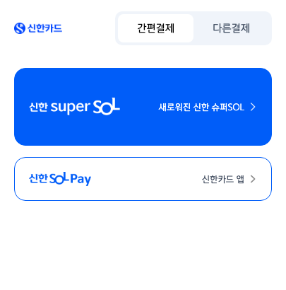
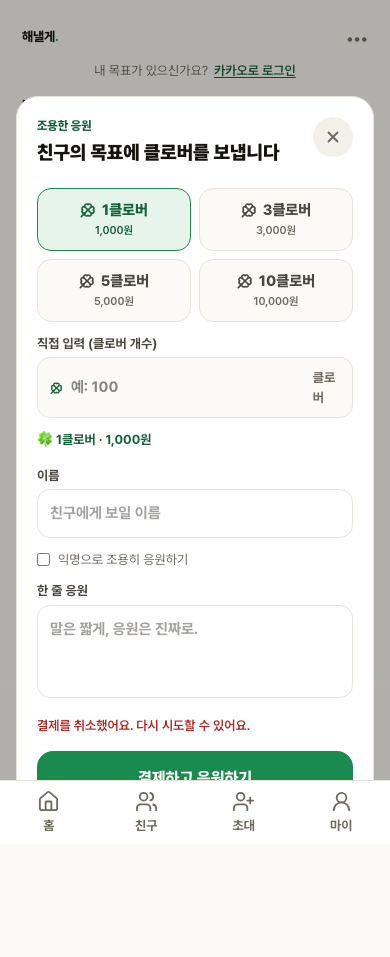

Toss Payments 샌드박스 종단 검증
G4-PAY는 테스트 주문 생성부터 Toss Payments 샌드박스 승인 콜백과 주문 상태 반영까지 확인하는 결제 검증 범위입니다. 실제 staging과 Toss Payments 샌드박스를 사용했고, mock 승인이나 성공 URL 강제 이동은 사용하지 않았습니다.
범위 판정: BLOCKED · 신한카드 3-D Secure 카드 소유자 인증 필요
EXIT 1주문 생성·승인·콜백·상태 반영
EXIT 1취소·실패·중복 콜백 전체
CARD신용·체크카드 수단 선택
HTTP 200Toss sandbox 세션 생성
PASS실제 사용자 취소·금액 불일치
EXIT 0QA 계약·전체 단위 회귀
CARD 선택과 카드사 외부 인증 전환

신한카드 앱 인증 단계 Toss Payments 위젯에서 신용·체크카드를 선택하고 실제 카드사 select에서 신한을 선택한 뒤 신한카드 SuperSOL 또는 SOLPay 앱 인증 화면으로 전환됐습니다.- 선택 수단 DOM:
aria-label="신용·체크카드 결제 수단 선택됨". - 카드사 DOM:
select[aria-label="카드사 선택"]값CARD__SHINHAN. - 제출 전 Toss Payments UI:
payment-widget.tosspayments.com, “테스트 환경이에요. 실제로 결제되지 않아요.” 배너 표시. - Toss Payments sandbox 세션 API 응답: HTTP 200.
- 최종 인증 호스트:
vbv.shinhancard.com.
- 기존 판정은 계좌이체 하위 수단인 BankPay 화면을 카드 결제 전체의 차단 사유로 잘못 사용했습니다. 이번 검증은 결제 수단을 CARD로 고정하고 카드사 선택 DOM까지 assertion으로 확인했습니다.
- 제품은 Toss Payments 위젯의
paymentMethod.method === "CARD"일 때만 결제를 요청하며, 계좌이체 등 다른 수단은 카드 선택 오류로 거부합니다. - 공식 해외카드 테스트 번호는 해외카드 계약·상점 설정이 필요한 별도 경로이며, 현재 국내 카드사 위젯을 대신하는 근거로 사용하지 않았습니다.
- 결제 버튼 제출과 sandbox 응답 확인 뒤 신한카드 3-D Secure 화면까지 전환됐습니다. 이 화면에는 취소·닫기 control이 없어 실제
failUrlcallback도 생성되지 않았습니다. - 다음 단계는 개인 카드와 카드사 앱 인증입니다. 실카드·개인정보·실결제가 금지되어 있어 이를 우회하지 않았고, 성공 callback과 DB 상태 반영은 PASS로 기록하지 않았습니다.
취소·오류 경로

실제 결제창 취소 PASS 결제창 취소 뒤 제품의 재시도 안내가 표시되고 주문 상태가 READY 또는 PENDING에서 잘못 승인되지 않았습니다.- 금액이 다른 callback은 HTTP 400으로 거부됐습니다.
- 취소 뒤 주문은 승인 상태로 변하지 않았습니다.
- 실패 callback은 신한카드 3-D Secure 화면에 취소 control이 없어 미관찰이고, 중복 성공 callback은 카드 소유자 인증 뒤에만 생성됩니다. 결제 실패 URL을 직접 구성하거나 이동한 결과는 증거에서 제외했습니다.
- staging의
PAYMENTS_ENABLED는 검증 뒤 HTTP 503payments_disabled로 복구했고,TOSS_SECRET_KEY는 0건입니다. 테스트용 Auth user·member·goal·cheer·payment·payment_log·clover_ledger·notification·clover_balance·귀속정보 잔여도 모두 0건입니다.
소스와 기준
CARD 결제 수단과 신한카드 선택, 테스트 환경 배너, 결제 제출, Toss Payments sandbox 세션 HTTP 200, 신한카드 3-D Secure 화면까지 확인했습니다. 카드사 화면에는 취소·닫기 control이 없어 실제 실패 callback은 생성되지 않았고, 성공 callback은 카드 소유자 인증 전이라 미관찰입니다. 따라서 주문 승인·상태 반영과 실제 실패·중복 callback은 BLOCKED입니다. 취소와 금액 불일치는 PASS이며, 운영 결제·실제 과금·운영 배포는 실행하지 않았습니다.